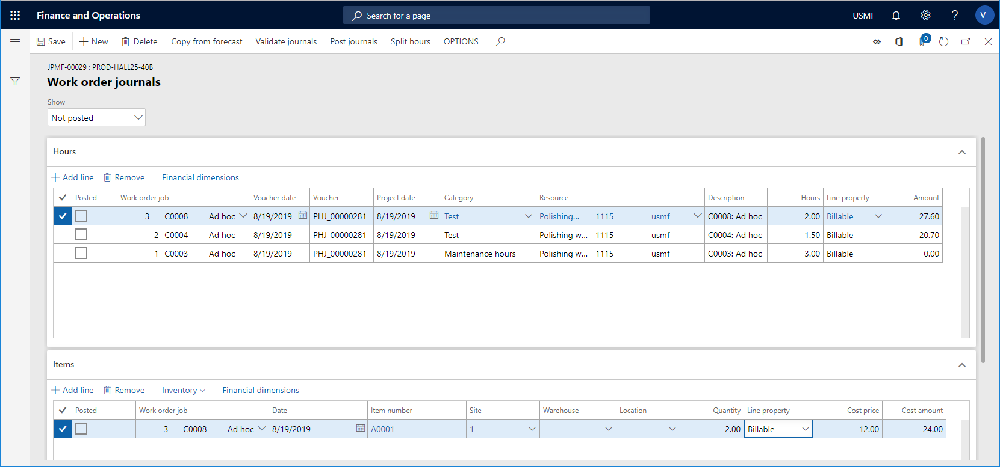
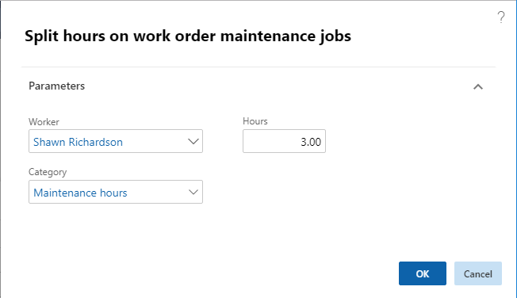
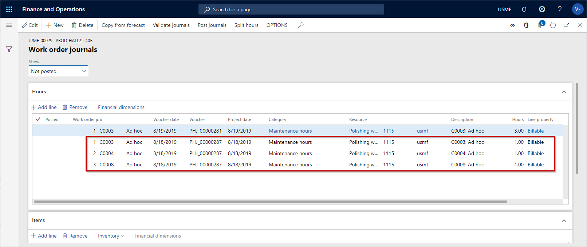

Verbrauch registrieren
Important
Dynamics 365 for Finance and Operations hat sich zu speziell entwickelten Anwendungen entwickelt, mit denen Sie bestimmte Geschäftsfunktionen verwalten können. Weitere Informationen zu diesen Änderungen finden Sie im Dynamics 365-Lizenzierungshandbuch.
Wenn ein Wartungsauftrag abgeschlossen ist, ist der nächste Schritt die Verbrauchserfassung und die Buchung der Journale. Sie können Anmeldungen zu den folgenden Verbrauchsarten vornehmen: Stunden, Elemente und Ausgaben. Die verschiedenen Verbrauchsarten werden erfasst und auf der Seite Arbeitsauftragserfassungen gebucht. Die Erfassungseinrichtung in Anlagenmanagement dient der Erstellung und Buchung von separaten Journalen für Stunden, Posten und Ausgaben im Modul Projektmanagement und Abrechnung.
In einigen Fällen können Sie einem Arbeitsauftrag Prognosezeile hinzufügen oder löschen. Die Einrichtung eines Arbeitsauftrags-Lebenszykluszustands, der zugehörige Projekttyp und die mit dem Projekttyp verbundenen Stufenregeln bestimmen, ob Sie Erfassungszeilen hinzufügen oder bearbeiten können. Weitere Informationen über den Lebenszyklus von Arbeitsaufträgen und die damit verbundenen Projektphasen finden Sie unter Prognosen, Arbeitsaufträge und Projekte.
Note
Es ist möglich, eine automatische Buchung von Erfassungen über den Lebenszyklus eines Arbeitsauftrags einzurichten. Weitere Informationen finden Sie unter Lebenszykluszustand von Arbeitsaufträgen.
Klicken Sie auf Anlagenverwaltung > Allgemein > Arbeitsaufträge > Alle Arbeitsaufträge oder Aktive Arbeitsaufträge.
Wählen Sie den Arbeitsauftrag aus und klicken Sie auf Erfassungen.
Klicken Sie auf Kopieren von Prognose, um alle Prognosepositionen zu übertragen, die mit dem Arbeitsauftrag verbunden sein können. Sie können auswählen, welche Verbrauchsarten Sie übernehmen möchten.
Bei Bedarf können Sie auf der entsprechenden FastTab weitere Verbrauchspositionen hinzufügen, indem Sie auf Zeile hinzufügen klicken und die Daten auf der Zeile ausfüllen.
Klicken Sie auf Erfassungen validieren, um die Erfassungszeilen vor der Buchung zu validieren.
Klicken Sie auf Erfassungen buchen, um die Erfassungszeilen zu buchen.
Nachdem Sie die Verbrauchserfassungen gebucht haben, können Sie den Arbeitsauftragslebenszyklusstatus aktualisieren. Beispielsweise um anzugeben, dass der Arbeitsauftrag abgeschlossen wurde, können Sie den Lebenszyklusstatus in „Abgeschlossen“ aktualisieren.
- Wählen Sie im Feld Anzeigen oben auf der Seite Arbeitsauftragserfassungen aus, welche Erfassungszeilen Sie sehen möchten: Alle, Nicht gebucht oder Gebucht. Die gebuchten Erfassungen haben ein Häkchen im Kontrollkästchen Gebucht.
- Wenn Artikelzeilen im Arbeitsauftragserfassungen erstellt werden, werden Produktdimensionen und Tracking-Dimensionen, die sich auf den Artikel beziehen, automatisch in die Journalzeile übertragen.
Der folgende Screenshot zeigt ein Beispiel für Stunden- und Artikelregistrierungen auf einem Arbeitsauftrag in Arbeitsauftragserfassungen.

Teilzeitarbeitszeit auf Arbeitsaufträgen mit mehreren Arbeitsaufträgen
Wenn ein Arbeitsauftrag mehrere Arbeitsaufträge enthält, können Sie die Arbeitszeiten mit der Funktionalität Stundenteilung erfassen, d.h. eine Stundenregistrierungszeile kann gleichmäßig auf jeden Arbeitsauftrag verteilt werden.
Klicken Sie auf Anlagenverwaltung > Allgemein > Arbeitsaufträge > Alle Arbeitsaufträge oder Aktive Arbeitsaufträge.
Wählen Sie den Arbeitsauftrag aus und klicken Sie auf Erfassungen.
Wählen Sie die Stundenregistrierungszeile aus, die Sie aufteilen möchten, und klicken Sie auf Stunden teilen.
Im Dialog Stunden für Wartungsarbeiten am Arbeitsauftrag teilen wird der Name des angemeldeten Mitarbeiters automatisch im Feld Arbeiter angezeigt. Bei Bedarf können Sie einen anderen Mitarbeiter auswählen.
Wählen Sie im Feld Kategorie eine Kategorie für die Stundenerfassung aus.
Geben Sie in das Feld Stunden die Anzahl der zu teilenden Arbeitsstunden ein.

Klicken Sie auf OK.
Beispiel: Im folgenden Screenshot werden Journalzeilen für einen Arbeitsauftrag mit drei Arbeitsaufträgen angezeigt. Die erste Zeile mit drei Arbeitsstunden wurde aufgeteilt, und für jeden Arbeitsauftrag wird eine Arbeitsstunde registriert. Nachdem die dreistündigen Registrierungszeilen erstellt wurden, entscheiden Sie, was mit der ursprünglichen Stundenregistrierungszeile (der ersten Zeile im Beispiel) geschehen soll. Sie können es so lassen, wie es ist, oder es löschen.

Finanzielle Dimensionen der Verbrauchserfassung
Wenn Sie Verbrauchserfassungen durchführen, werden die Registrierungen in einer bestimmten Reihenfolge um finanzielle Aspekte der verschiedenen Registrierungsarten ergänzt.
Stunden- und Ausgabenregistrierungen: Zunächst werden die finanziellen Dimensionen aus dem Erfassungs-Header hinzugefügt, falls vorhanden. Als nächstes werden die finanziellen Dimensionen aus dem zugehörigen Arbeitsauftragsprojekt hinzugefügt. Schließlich werden die finanziellen Dimensionen der Ressource (Arbeiter) hinzugefügt.
Elementregistrierungen: Zunächst werden finanzielle Dimensionen aus dem Erfassungskopf hinzugefügt, falls vorhanden. Dann werden die finanziellen Dimensionen aus dem zugehörigen Arbeitsauftragsprojekt hinzugefügt. Als nächstes werden die finanziellen Dimensionen des Standorts hinzugefügt. Schließlich werden die finanziellen Dimensionen aus der Position hinzugefügt.
Note
Für alle drei Registrierungsarten wird die Kombination der finanziellen Dimension validiert und ungültige Kombinationen werden ausgeblendet. Dies ist Standard-Setup mit anderen Finance and Operations Apps.